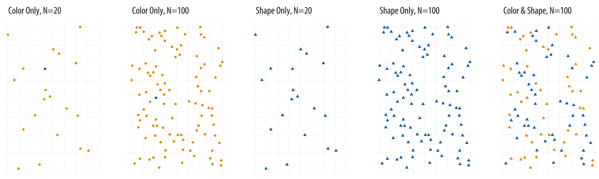
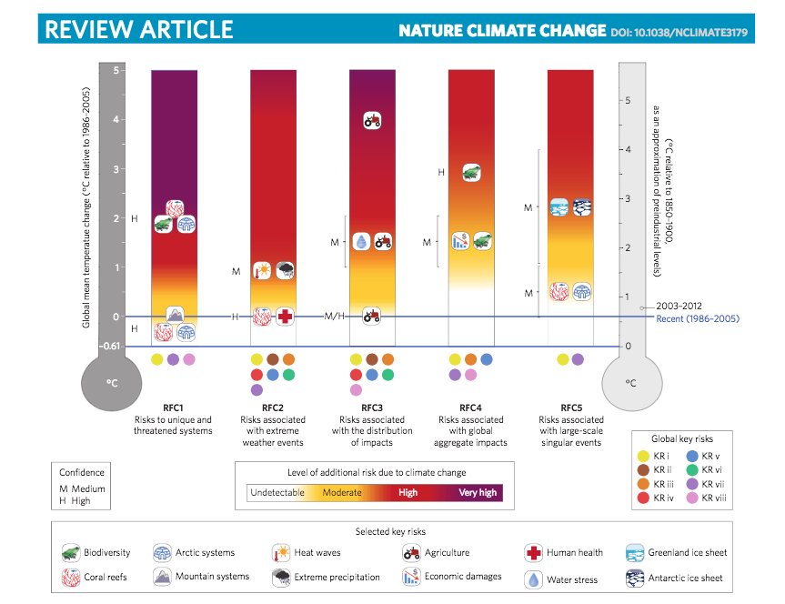

4. The Good, the Bad, and the Ugly¶
When it comes to Visualization for communication, this mean Dashboards and graphs that are created to inform others (Not the plots you make in EDA), a large component involves art and design.
We can communicate different agendas depending on how we visualize our data.
For example, let’s look at this award winning visualization named “Iraq’s Bloody Toll” created in 2011 by Simon Scarr which appeared in the South China Morning Post.
This visualization communicates the number of deaths per month in Iraq from 2003 until the beginning of the US withdrawal of troops at the end of 2011.
How does this plot communicate with you right off the bat?
It is designed in such a way so that it resembles dripping blood, with its downward facing bars and blood-red colour. This is to really relay the negative measurement of the data; the deaths in Iraq as indicated in the title.
If we instead change the colour, orientation of the bars, and title, we have a different story now.

Instead of the horrible statistic of how the war caused an increase in death rates, we have a figure that communicates the decline of deaths in Iraq.
The green colour is less jarring and negatively associated with. The bars showing the decrease in count also shows a happy story along with the title.
Both figures show the same data, neither are being deceptive but with 3 small differences they communicate quite different messages.
4.1. Story telling¶
The above example is a great way to show how design choices are so important in the story telling process.
Just like visualizations, storytelling is crucial to communicating your insights to your audience.
Generally speaking, the below points will aid in creating an effective and compelling story.
What question(s) are we going to attempt to answer?: It shouldn’t come to a surprise that this is one of our items. We learned this in the last lesson and it should make complete sense that we want to communicate this in our storytelling. We want the audience to know what it is they are going to learn while viewing your visualization(s)?
Peak your audience’s interest: We want to captivate our readers interest early on in a manner that will make them want to learn more and continue viewing. This can take place in a striking figure, a problem that demands a solution.
Present facts in an engaging way without hyperbole: Remember that the audience often remembers the story and not the data, and so this part is extremely important to create a long lasting impression. It is also important that although the story should be exciting, the root of our visualizations is data and so the story must be maintained in fact. We want clear and honest communication. The visualization and narration MUST be true to maintain the trust and credibility of our reports and organizations.
Tailor it to the audience you have in mind: Keep in line with whom you are speaking with. That means, using technical language and answering questions that is fitting to the respective readers or else it can be ineffective in both directions.
For some amazing examples of data storytelling take a look at the following:
4.2. Best Practices¶
This section will pin point a few beast practices to instill to avoid common pitfalls that occur, often without too much thought.
4.2.1. Aspect ratios¶
Something as simple as a ratio can be problematic when communicating through graphs. It’s important that when you are placing worksheets on a dashboard, or simply creating a single visualization, you are representing it with a standard height and width. Aspect ratios can affect our perception of rates of change.
Let’s take the following as an example.

Source: socviz.co and William S. Cleveland
The left most plot shows a graph when the line appears to converge to infinity as x increases. However, looking further and re-adjusting to a wider plots corrects for this miscommunication and there no longer appears to be such convergence.
4.2.2. Avoid Misleading Axes¶
Another poor way to communicate your data is breaking your axis or not showing the 0 mark where your data begins which leads to a deceptive difference in proportion.
Generally speaking, we like to make comparisons in the categories of our data and when we some axis techniques, this can make the difference between values of categories look much larger than they truly are.
Let’s first see an example of this when we break up the axis.
Source: Joel Osblom - Data Visualization originally from The Economist
The left plot shows the x axis broken up which results in the top bar measuring only 1.5 times that of the second bar which in reality the difference between the two is much more, 5 times as long in fact.
The second plot correct this and it is clear the actual difference in value between the 2 categories.
We’ve included this example which is from an article in The Economist where they identified mistakes they have made in their previous visualizations.
This type of behaviour not only helps learn from their past mistakes but it also creates a transparency which causes the reader to trust the source more even though that have made errors in the past.
Owning up to one’s mistakes is often looked at with respect instead of avoiding it pretending it didn’t happen.
Let’s also look at an example where the axis of a bar chart does not begin at 0.

Source: Calling Bullshit
Here we are comparing the average number of hours worked per week by different countries. Here it looks like Germany have quite a lead over Italy, France in Belgium.
If we replot the data and include the 0 value, we can re-evaluate and conclude that the difference between the countries we identified are not nearly as great as it originally appeared.

Source: Calling Bullshit
It’s important to note that including the 0 value on axes is particularly agreed upon for bar plots but not agreed upon for other plot types. Often it could help you analysis to zoom into areas of interest in scatterplots or line plots, however other times it could be a method used to communicate one’s own agenda.
For more discussion on this see:
4.2.3. Are Gridlines or Labels Necessary?¶
This isn’t necessarily going to be a solid rule however it definitely warrants a discussion.
Gridlines are heavily debated in the Data Visualization community and people disagree on if they are needed at all.
My take on this depends on what your question is and how you are trying to answer it.
In a lot of cases, gridlines can distract from the fundamental insight of the plot and it’s best to not to overuse them since instead of helping your plot, they can make it harder to read.
Or if it’s necessary to know a specific value, it may be more appropriate to use a plot with labels and ignore gridlines (as seen in the middle plot). If the values are not necessary and only the comparison between the categories in a bar plot specifically, then omitting labels and gridlines may even be the most effective in this case.
4.2.4. Add Informative Titles¶
Readers often remember the story you are telling instead if the exact data and your plot’s title is a contributing factor. Chart titles frame the story in your data and thus it’s important not to simply title your plots with the metrics it’s plotting but with the insight you are trying to convey. This will make it more likely that the reader will retain the visualization’s goal.
Take the below example.
From this title alone, the reader will be able to know right away the point of the plot and no longer needs to decipher what the creators were trying to communicate, nor look elsewhere for the narration. It is immediately clear why this visualization has been created and the question it is answering.
4.2.5. Highlight What’s Important¶
Although data visualization will present the data for the audience, sometimes we need an additional step to make it that much more obvious why the plot exists or what the key point of it is. Highlighting distracts the reader from the noise and “highlights” the important information in the plot and tell the desired story.
The following example from Data Visualization shows how in this case we have ordinal data and are unable to sort like we would normally. Instead, we highlight the day of the week that has the highest donation amounts and add annotation to explain why this is occurring.
4.2.6. Don’t use Many Channels for Different Fields¶
Adding several channels such as size, colour and position to a graph, can overwhelm the visualization and can frustrate or confuse the reader quickly.
We’ve seen where we have used both colour and size for a single measure, however I’m speaking on giving several channels to many different measures.
The example below show how hard it could potentially be to find data within a visualization. Here we can see how easily a data point is located when colour alone is used as a channel, however when we have size and colour finding specific data points within the data becomes much harder.
Source: socviz.co
A more effective option would be too simple create a separate plot.
4.2.7. Use Colour Effectively¶
4.2.7.1. Categorical Use¶
We discussed how using multiple channels for a single field can be helpful in communicating especially if someone has a colour seeing deficiency but when position or size is being represented, having colour as an additional channel can be disorienting.
Source: Data Visualization
In the case above, we see that if there are many bars or categories, the plot becomes much more confusing. Had this plot had fewer bar, the colour channel may have been better executed.
Colour channels in general work better when there are less than 5-8 distinct categories.
4.2.7.2. Numeric Use¶
Tableau gives several colour palettes to choose from with the option of making your own.
When it comes to numeric data, we will need a spectrum of colour to represent a field.
Generally speaking, we use a sequential colour spectrum with a single hue when communicating numeric data.
Here we represented the temperature in both the y axis and the colour channel just to make our point clearer.
General rule of thumb is to avoid a spectrum with too many colours as it can be unintuitive which colour is associated with each range of values.
The exception is if a Diverging palette is used.
Diverging colour schemes show 2 colours on opposite sides of a spectrum that converge to a critical point (or diverge from a center point to 2 separate colours). We use this type of scheme when the data has a natural midpoint (such as temperature or percentage).
4.3. Where Things Go Wrong¶
Let’s take a look at some examples of poorly constructed visualizations in the wild.
4.3.1. How Xiaomi Stacks up Against the World’s Biggest Smartphone Makers¶
Here we have a visualization published by Forbes, generally a reputable source and yet here we can already see some clear problems.
The first thing I noticed was that although “Q2 China Market Share” and “Q2 Global Shipment (Millions)” are separate plots, I immediately wanted to connect the two and got confused why the 13.00% orange bar was larger than the 21.2 orange bar. After further investigation I concluded that both bar charts have separate units and are plotting different things but the initial confusion was still there. We also have the broken bars in 2 locations which drastically misleads the public that there is less of a separation between the values then there really is!
4.3.2. A crisis of faith in democracy? (New York Times.)¶
At first glance this visualization doesn’t look too bad, but the problem with this visualization is in the way it was made from the given data upon further inspection.

First, the x-axis is representing people born in different periods of time and the graphs are not representing a time of measure. A line graph in this last is somewhat deceptive even if that wasn’t the intent.
The data from this graph was collected by asking the respondents to rate the importance of living in a democracy from 1 to 10 with 1 being Not at all Important and 10 being Absolutely importance. This graph is only plotting the difference of respondents who votes 10. That being said people although they may not have rated it 10, most people still rated the importance of living in a democracy quite high.
If instead we plotted the average rating over the different age generations, we still get a downward trend but our scale on the y axis is not nearly as jarring as initially perceived.

4.3.3. Nature Climate Change¶
Here we have an example where someone was attempting to visualize everything and the kitchen sink. Climate change is difficult to explain in the best of times, and so when someone attempts to explain as much as possible in a single graphic, it’s not surprising that it fails.
We have a multiple colour channels, shapes and marks, 2 scales, labels and axes, multiple legends and a colour spectrum.
I’m just putting this in here because you may feel like you are being clever at finding a way to put everything in a single figure, but if it’s this much effort, it’s going to be that much effort to try and actually decipher the thing.
4.4. Data Science Ducks¶
A duck is a data graphic that prioritizes style and design over information and substance. The term was coined by Edward Tufte who is a well-known statistician currently working at Yale University.
Generally speaking, infographic style plots and graph or gimmicky methods of communicating information in the form of graphs is what is described as a duck and in many cases does harm in the communication of the data.
4.4.1. iPad - iproblem¶
In 2011-2012, when Apple released a new version of its iPad, the website https://gizmodo.com wrote an article on its new batter capacity with this visualization.
It boast a 70% larger battery but there are multiple reasons this is a duck. First, although the battery is larger, the battery life remained unchanged and simply needed to increase for the larger screen and more demanding technical components.
Secondly, the length and width of the battery on the left has been increased by 1.7 times which results in a 2.9 times increase in area!
This is also an example of how using 2 channels (area and position) can be problematic for a single measure.
4.5. Make-up (better) Plots¶
Visual.ly, a known infographics site produced this to explain cosmetic usage in different countries.
Instead of providing clarity however, it’s clear that their determination to use cosmetic shapes proves to seriously compromise the graph. 17.9% is only slightly higher than 6.8% and 6.2,6.4 and 6.8% all look the same height. Even if they has sorted the “bars” in ascending or descending order, there would still be so much wrong in this graph.
4.6. Pizza Pie¶
Here, we have a pretty typical and reoccurring culprit in data visualization.
YouGov posted this visualization via twitter in March 2017 and the after math as bad as you expect it to be.
YouGov describes itself as “an international research data and analytics group.” and considering their line of business you’d think that they would be more award of the problems in this plot.
Right away we know the portions add up to far more than 100%, 485% in fact.
This is an example where the designer wanted to utilize the pizza theme and design but scarified any clarity or insight. A bar plot would have been a far superior plot type.

{kind=link}
{kind=link}
{kind=link}
{kind=link}
{kind=link}
{kind=link}
{kind=link}
{kind=link}
{kind=link}
{kind=link}
{kind=link}
{kind=link}
{kind=link}
{kind=link}
{kind=link}
{kind=link}
{kind=link}
{kind=link}
{kind=link}
{kind=link}
{kind=link}
{kind=link}
{kind=link}
{kind=link}
{kind=link}